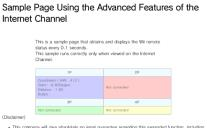
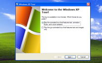
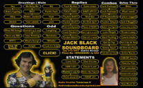
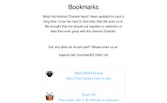
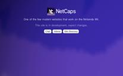
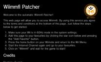
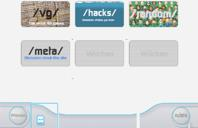
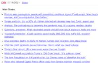
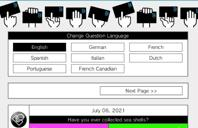
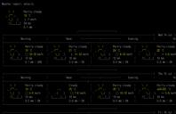

GAMES - VIDEOS - MEDIA - UTILITIES - OTHERS
GAMES - VIDEOS - MEDIA - UTILITIES - OTHERS
|  |  |  |
| Internet Channel Advanced Features |
Windows XP Tour | Jack Black Soundboard |
|---|
|  |  |  |
| RC24 Bookmarks Bookmarks for the Internet Channel |
NetCaps WiiNet fork, seemingly dead |
Wiimmfi Patcher Web Based on FlashHax |
|---|---|---|
|  |  | |
| WiiMusic.net Internet Radio |
Wiichan Forum site, hosted on a Wii |
CNN Lite Text-based news site |
|  |  | |
| RC24 + Everybody Votes! View EVC Results |
wttr.in Text-based weather |